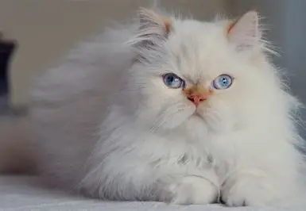
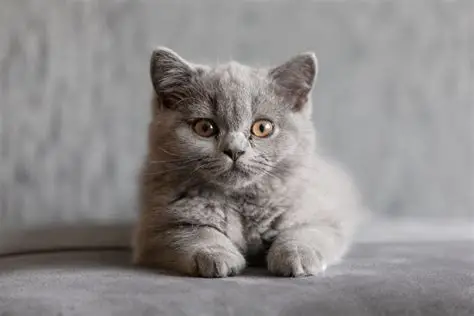
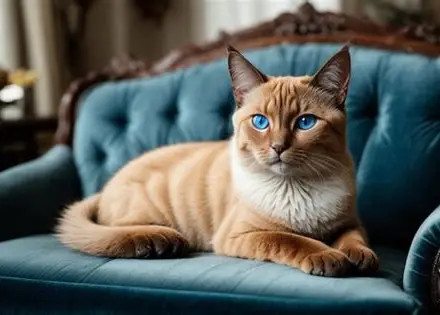
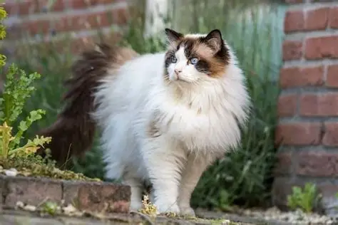
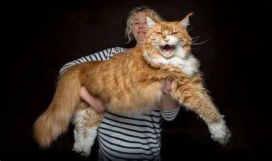

Popular Cat Breeds Around the World
From the elegant and fluffy to the playful and mischievous, there's a cat breed for every personality. Here, we'll introduce you to some of the most beloved cat breeds in the world, highlighting their unique characteristics and appearances.
The Most Popular Breeds

Known for their long, luxurious coats and sweet, gentle personalities.

A calm and easygoing breed with a dense, plush coat. They are known for their round faces.

Famous for their striking blue eyes and elegant, slender bodies.

A large, gentle giant known for their docile and affectionate nature.

Known as the "gentle giant" of the cat world. They are intelligent and playful.